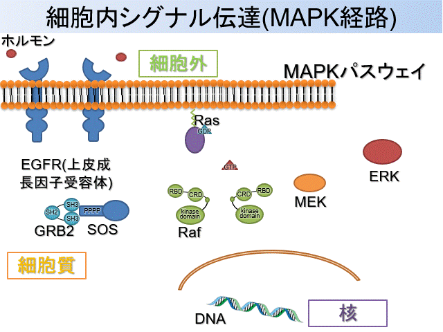
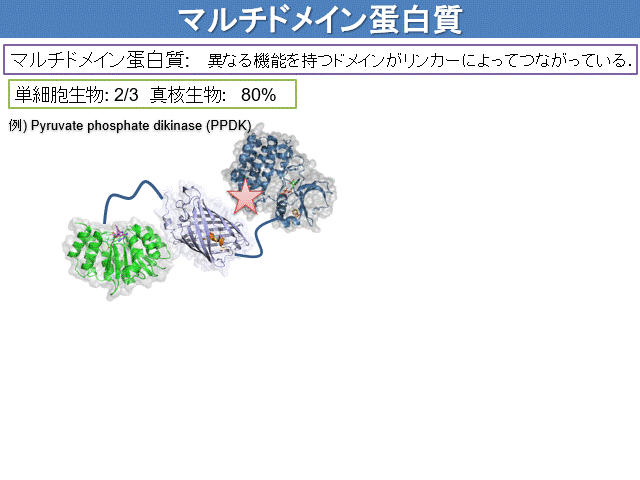

Biomolecules do not remain in one place or stay still in a single shape (structure). They constantly fluctuate, encounter and support a variety of partners, and perform their roles while changing shape and state. Our laboratory aims to reveal how biomolecules move, interact, and work together to sustain our bodies.
Understanding Function through Biomolecular Shape and Motion
By integrating structural analysis, interaction analysis, method development, and molecular simulations, we study the conformational diversity and dynamic properties of biological macromolecules—DNA, RNA, and proteins—that cannot be captured by experiment or computation alone.
By integrating experiments and computation, we visualize structures, motions, and interactions to understand the diverse functions of biomolecules.
RESEARCH 01
Protein Structure and Dynamics
We study signaling and enzyme proteins, with particular emphasis on multidomain proteins and proteins containing intrinsically disordered regions, to understand molecular function from their conformational ensembles and time-dependent changes.
The Intracellular MAPK Signaling Pathway
Intracellular Signaling
Extracellular stimuli are transmitted into the cell when ligands such as hormones or growth factors bind to receptors on the cell membrane. Ligand binding induces phosphorylation of the intracellular region of the receptor, which sequentially activates various signaling proteins (Figure 1). The transmitted information ultimately reaches transcription factors in the nucleus and alters gene expression, thereby regulating processes such as cell proliferation and differentiation.
MAPK Signaling
Among the many intracellular signaling pathways, our laboratory focuses on proteins involved in the RAS–MAPK pathway, which is crucial for cell proliferation and differentiation. In this pathway, binding of a growth factor to the membrane receptor EGFR transmits information to intracellular proteins.

Figure 1. Schematic overview of the intracellular signaling network centered on RAS.
First, GRB2 recognizes EGFR and recruits SOS1 to the vicinity of the cell membrane. SOS1 binds to RAS and promotes GDP–GTP exchange, thereby activating RAS. Activated RAS triggers the RAF–MEK–ERK MAPK cascade and regulates the expression of genes involved in cell proliferation and differentiation. RAS also binds to multiple effectors, including RGL2, and participates in signaling pathways beyond the MAPK cascade.
Target Proteins
We investigate GRB2, SOS1, RAS, RAF, RGL2, and related molecules (Figure 2) to determine how their domains and intrinsically disordered regions interact and cooperate to transmit information. By focusing on their three-dimensional structures and dynamics, we aim to elucidate the molecular mechanisms that regulate signal transduction.
Figure 2. Three-dimensional structures of GRB2, SOS1, RAS, RAF1, and RGL2.
Our goal: To understand intracellular signaling in terms of the three-dimensional structures and motions of protein molecules, helping to clarify mechanisms of cancer development and identify potential therapeutic targets.
Multistate Structures of Ubiquitin Hydrolases
Figure 3. Conceptual diagram of ubiquitination and deubiquitination.
The Ubiquitin–Proteasome System and Deubiquitinating Enzymes
Cells must properly degrade proteins that have completed their roles or acquired abnormal structures and replace them with newly synthesized proteins. A major system responsible for this protein quality control is the ubiquitin–proteasome system (Figure 3). Proteins destined for degradation are tagged with the small protein ubiquitin and transported to the proteasome for degradation. This system regulates many biological processes, including the cell cycle, signal transduction, and DNA repair.
Ubiquitin attached to proteins can be cleaved by deubiquitinating enzymes (DUBs). By removing or editing ubiquitin chains, DUBs may protect target proteins from degradation or, conversely, promote their degradation. They also regenerate ubiquitin for reuse. The balance between ubiquitin attachment and removal precisely regulates protein abundance and function within the cell.
Figure 4. Multistate structure of YUH1.
We study UCHL1, UCHL3, and UCHL5, members of the DUB family. UCHL1 is abundant in neurons and contributes to ubiquitin homeostasis and intracellular protein quality control. UCHL3 recognizes ubiquitin and ubiquitin-like proteins and cleaves molecules attached to their C termini. UCHL5 binds to the 19S regulatory particle of the proteasome and regulates proteasomal degradation by cleaving or editing ubiquitin chains attached to target proteins. UCHL5 has also been reported to remove branch points from ubiquitin chains on the proteasome and thereby facilitate substrate degradation.
We analyze how these DUBs recognize and cleave ubiquitin from both structural and dynamic perspectives. In particular, we focus on multistate structures (Figure 4), in which an enzyme interconverts among multiple conformational states rather than adopting a single structure. Using solution NMR, we investigate structural and dynamic changes around the active site upon ubiquitin binding to understand the molecular mechanisms of substrate recognition and catalysis by DUBs.
Our goal: To uncover molecular mechanisms shared by deubiquitination processes within the ubiquitin–proteasome system and help identify therapeutic targets for diseases such as Alzheimer’s disease.
Liquid–Liquid Phase Separation (LLPS)
GRB2–SOS1 and Liquid–Liquid Phase Separation
In addition to membrane-bound organelles such as the nucleus and mitochondria, cells contain membraneless organelles formed through the assembly of specific proteins and nucleic acids. Liquid–liquid phase separation (LLPS) (Figure 6) is one mechanism underlying their formation. By locally concentrating selected molecules through LLPS, cells are thought to dynamically regulate where and how rapidly biochemical reactions occur.
GRB2 contains two SH3 domains that bind to multiple proline-rich motifs within the intrinsically disordered region of SOS1. Assembly of many molecules through such multivalent interactions may produce biomolecular condensates containing GRB2 and SOS1. We analyze GRB2–SOS1 interactions and structural dynamics to determine how condensate formation locally activates RAS and regulates the strength and duration of intracellular signaling.
Figure 6. Schematic illustration of liquid–liquid phase separation (LLPS).
Our goal: To elucidate, at the molecular level, how liquid–liquid phase separation forms the structures often described as membraneless organelles.
Dynamics of Flexible Proteins: Multidomain and Intrinsically Disordered Proteins

Figure 7. Schematic illustration of multidomain and intrinsically disordered proteins.
Structure and Dynamics of Flexible Proteins
Some proteins are multidomain proteins (Figure 7) in which multiple structural units, or domains, are connected by flexible linkers. Although each domain has a relatively stable three-dimensional structure, the relative positions and orientations of the domains continually change. These motions enable simultaneous recognition of multiple molecules and transmission of information between distant binding sites.
In contrast, intrinsically disordered proteins (IDPs) and regions (Figure 7) do not adopt a single well-defined structure in isolation but rapidly interconvert among many conformations. This flexibility enables them to bind diverse partners and sometimes to form specific structures upon binding. They also play important roles in LLPS through multivalent interactions. Using NMR, we analyze the conformational ensembles and motions of multidomain and intrinsically disordered proteins to reveal how their flexibility contributes to protein functions such as enzyme activity and to intracellular signaling.
Our goal: To visualize the conformational distributions of flexible proteins and clarify their relationships to function.
RESEARCH 02
Biomolecular Interaction Analysis
Beyond simply determining whether molecules bind, we quantify which residues in proteins and RNA participate in recognition, how strongly they contribute, and on what timescales they act.
Molecular Recognition in GRB2–SOS1 and SOS1–RAS
NMR titration experiments allow us to track changes in the position and intensity of individual signals as a target molecule is added. For GRB2–SOS1 and SOS1–RAS, we characterize binding interfaces, binding-induced structural changes, and interdomain cooperativity at residue-level resolution.
residue-specific KD
We fit titration curves for individual residues to estimate apparent dissociation constants, KD. When values differ among residues, we consider deviations from simple 1:1 binding, local conformational changes, exchange processes, and multiple binding modes. Global and residue-specific analyses are combined, and numerical uncertainties are evaluated.
Figure 8. Determination of molecular interactions and binding affinity by NMR.
Our goal: To quantify molecular recognition in a site-specific manner and reveal how interactions regulate signal transduction.
RESEARCH 03
Development of NMR Measurement and Analysis Methods
Nuclear magnetic resonance (NMR) spectroscopy is a cornerstone of structural biology that provides atomic-resolution information on the three-dimensional structures, dynamics, thermodynamic stability, and intermolecular interactions of proteins, nucleic acids, lipids, and other molecules in solution or living cells. To make the most of the diverse molecular information uniquely available from NMR, we also improve NMR measurement and analysis methods. We develop technologies that capture structural states and intracellular environments inaccessible to conventional methods while extracting the maximum information from limited measurement time.
Multistate Structure Calculation
We develop computational methods that integrate experimental information such as NOEs, chemical shifts, and relaxation data to determine structures as multiconformational ensembles rather than as a single average structure.
We develop sample-preparation and measurement methods for studying protein structure, motion, and interactions in living cells or in crowded environments that mimic the cellular interior.
We reconstruct high-quality multidimensional spectra from limited NMR data acquired using sparse sampling and related approaches, aiming to accelerate measurements and improve sensitivity.
Method development linking measurement, signal reconstruction, extraction of physical parameters, and multistate structure determination.
Our goal: To develop new NMR methods that enable proteins with complex structures and dynamics to be observed more accurately, rapidly, easily, and under more physiologically relevant conditions.
RESEARCH 04
Computational Chemistry Simulations
We compare molecular motions derived from NMR relaxation analysis with molecular dynamics (MD) simulations to investigate the atomic-level motions underlying experimentally observed ensemble averages.
Under construction
Under construction
Protein Structural Ensembles
For GRB2, SOS1, RAS, YUH1, and UCHL-family proteins, we analyze domain motions, conformational ensembles of intrinsically disordered proteins, and exchange near active sites. We validate and reweight simulation-derived ensembles against NMR data to construct molecular pictures consistent with experiment.
tRNA Structure and Dynamics
We investigate how the global structure of tRNA, local base pairing, and interactions with ions and water molecules affect molecular recognition and function. MD simulations allow us to visualize short-lived structures and local motions that are difficult to observe directly by experiment.
Our goal: To connect experimental observables with atomic motions and describe biomolecular function as a time-dependent process.